Archived: Quick Start Guide for Ready-to-Fly Vehicles¶
Warning
ARCHIVED ARTICLE
The article is out of date (3DR replaced APM2.x with Pixhawk and the kits come with everything configured out of the box). In addition, 3DR no longer supplies hardware described in this article (including Iris+, Solo, X8, Aero-M).
This page is a quick start guide for users who have purchased a 3DRobotics Ready-to-Fly (RTF) multicopter including a Pixhawk preloaded with the latest Copter firmware. All other users should skip to the 首次设置 section which includes the full autopilot set-up and calibration instructions.
Install Mission Planner¶
Download the most recent Mission Planner MSI from here.
Open the Microsoft installer file (.msi) and select Run to run the installation utility.

Follow the instructions to complete the setup process (accept the license terms, choose a location for the installation etc.)
The installation utility will automatically install any necessary software drivers. If you receive a DirectX installation error, please update your DirectX plug-in from the Windows Download Center. If you receive the warning pictured here, select Install this driver software anyway to continue.
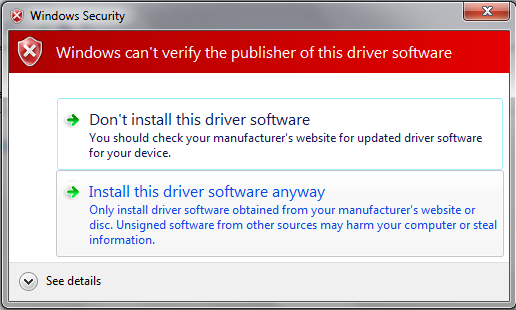{kind=link}
Once installation is complete, open Mission Planner. Mission Planner automatically notifies you about available updates. Please always run the most current version of Mission Planner.
Connect RC receiver¶
Is your RC receiver already connected and configured? If not, follow these instructions.
For RC control with PWM, connect RC receiver to APM Input Signal pins using connectors to attach channel 1 to the APM signal pin labeled 1, channel 2 to signal pin 2, etc. You will also need to provide power to the receiver by connecting a three-wire cable between the receiver and the APM for one of the channels.
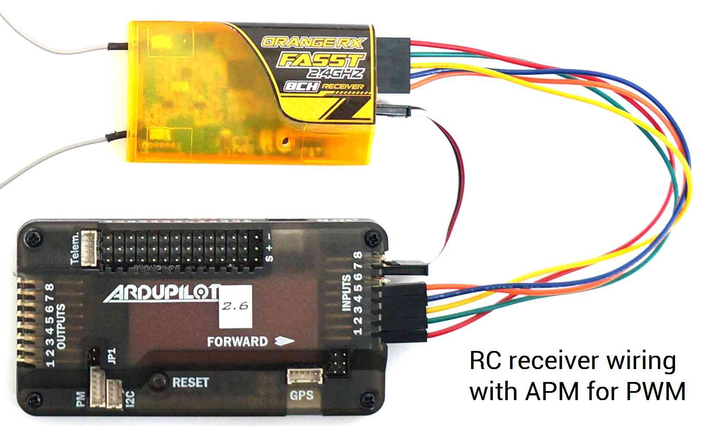{kind=link}
For PPM (all channels over one wire), use PPM jumper connectors to connect Input signal pins 2 and 3 on APM and signal pins 3 and 4 on the receiver. Use a 3-wire cable to connect the signal, power, and ground pins for channel 1 on the receiver to the three pins labeled 1 on APM. The specific pins used for the receiver may vary by model, so consult the documentation on your receiver for PPM configuration.
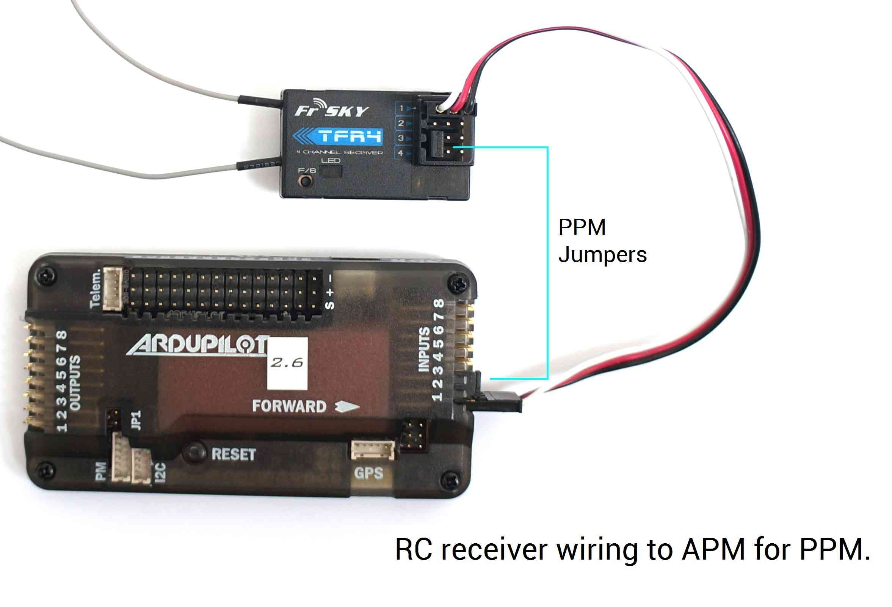{kind=link}
Once you’ve downloaded Mission Planner onto your ground station computer, connect APM to your computer using the micro USB connector and APM’s micro USB port. Use a direct USB port on your computer, not a USB hub.
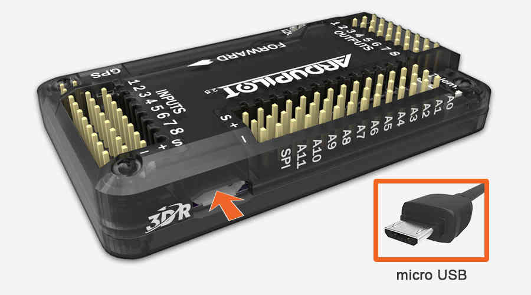{kind=link}
Windows will automatically detect APM and install the correct driver software.
Next we’ll let Mission Planner know which port we’re using to connect to APM. Open Mission Planner, and use the drop-down menus in the upper-right corner of the screen (near the Connect button) to connect to APM. Select Arduino Mega 2560 and set the Baud rate to 115200 as shown.
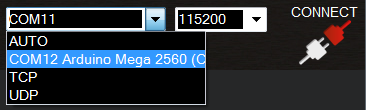{kind=link}
Select Connect (upper-right corner of the screen) to load MavLink parameters to APM. Mission Planner will display a window showing the progress of the MavLink download.
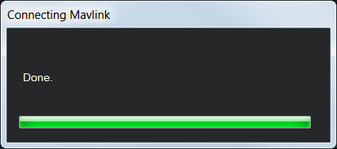{kind=link}
When the window displays Done and Mission Planner shows the Disconnect option in place of Connect, your APM firmware has been downloaded successfully.
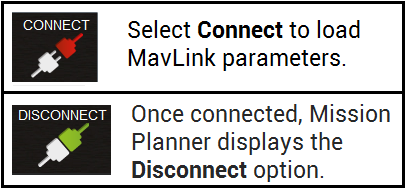{kind=link}
Turn on transmitter. Verify that the transmitter is in Airplane mode (APM needs airplane mode regardless of the platform type being piloted) and all trims are centered.
Transmitter(Mode 2): Recommended Channels
The left stick will control throttle and yaw; the right stick will control roll and pitch. The three-position switch will control flight modes.
In Mission Planner, select Mandatory Hardware and Radio Calibration. Click on the green Calibrate Radio button in the lower right of the window. Mission Planner will call a dialog window to ensure radio control equipment is on, battery is not connected, and propellers are not attached.
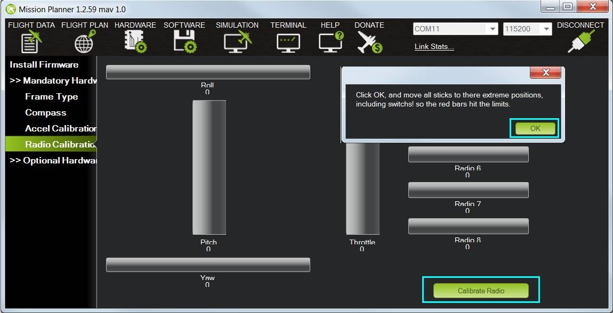{kind=link}
Select OK; move the control sticks and toggle switches on your transmitter to their limits of travel and observe the results on the radio calibration bars. Red lines will appear across the calibration bars to indicate maximum and minimum values. Move the Ch 5 and 6 toggle switches through their range of positions (Ch 7 and 8 are not used for basic operations).
Your transmitter should cause the following control changes:
Channel 1: low = roll left, high = roll right.
Channel 2: low = pitch forward, high=pitch back.
Channel 3: low = throttle down (off), high = throttle up.
Channel 4: low = yaw left, high = yaw right.
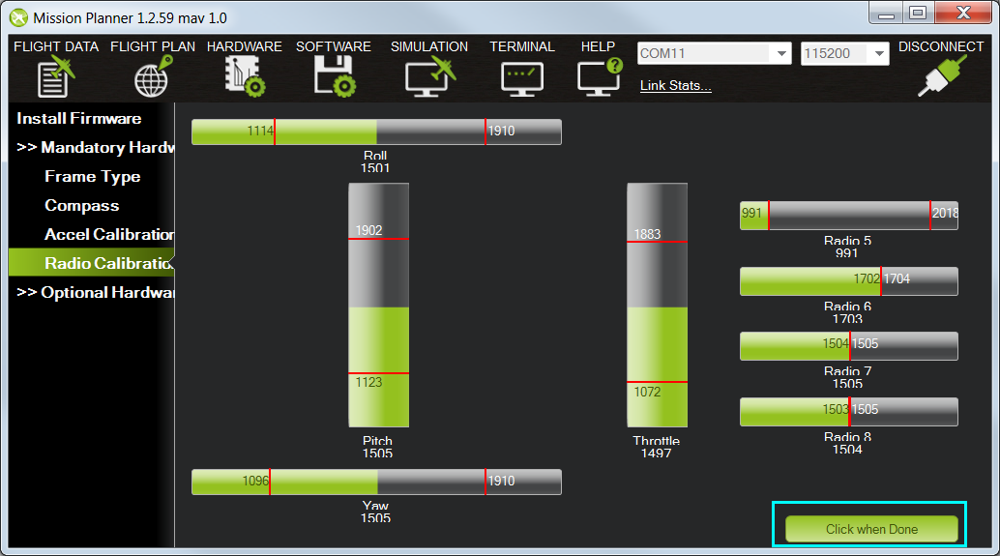{kind=link}
When the red bars for roll, pitch, throttle, yaw, and radio 5 (and optionally radio 6) are set at the minimum and maximum positions, select Click when Done. Mission Planner will show a summary of the calibration data. Normal values are around 1100 for minimums and 1900 for maximums.

Attach propellers¶
Unscrew prop nuts and add propellers to motor collets with writing on props facing up in relation to the sky. If you have a co-axial motor configuration, make sure that the writing on the props faces up even if the motor faces down. Add metal spacers on top of prop nuts if prop hub measures less than 5 mm in height. Tighten prop nuts to secure propellers in place. Try inserting a 2 mm (5/64) hex wrench into the hole in the side of the prop nut to get better leverage when tightening prop nuts. Select propellers based on motor directions. Find your frame in the images below. Use pusher propellers for motors marked clockwise and normal propellers marked counterclockwise. Pusher propellers are usually marked “P” or “SFP” on the propeller.
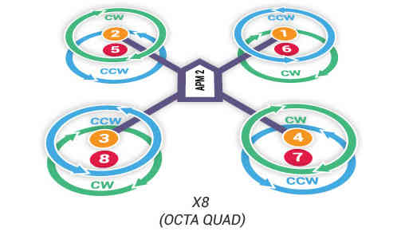{kind=link}
Pre-flight information¶
Safety is the key to successful flight. Please read the Safety Information Page before flying. Select an unpopulated area to fly your copter, away from people and developed areas, and always run the pre-flight checklistbefore connecting the battery. Make sure to read the Flying page for information about arming, disarming, and controlling your copter during flight.
When you’re ready to fly, place copter on the ground facing away from you. Connect fully charged LiPo battery to the power module connector when you’re ready to power on your copter. Follow the safe arming and disarming procedure described on the Maiden Flight page.
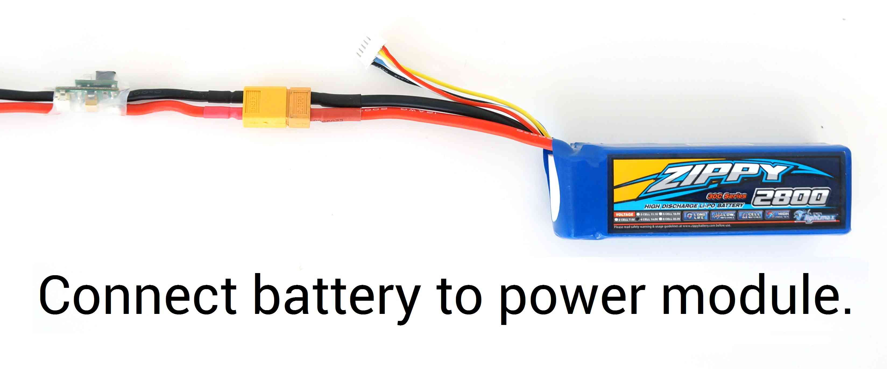{kind=link}
Next steps¶
Try learning about different autonomous flight modes to get the most out of your Copter, including loitering and running missions.